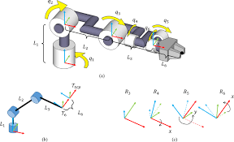
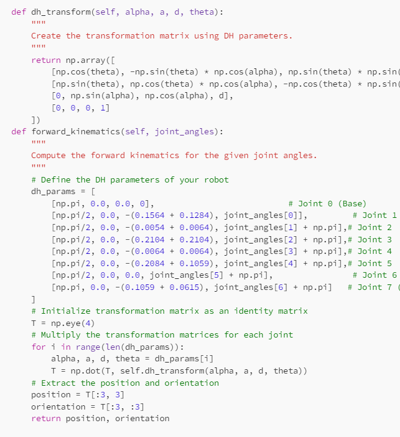

-
Teleoperation System
Led the development of an advanced Teleoperation System that enhances robot autonomy and functionality. Utilized Model-Agnostic Meta-Learning (MAML) and imitation learning algorithms to improve action recognition and adaptive motion planning. Integrated AI-driven perception systems with robotic hardware to enable seamless human-robot collaboration and real-time task execution.
Skills used: ROS1/ROS2, SolidWorks (CSWA), Python, C/C++, MATLAB, Point Cloud Library (PCL), MAML, Imitation Learning.
-

4 Degree of Freedom Robotic Arm
I designed a 4-degree-of-freedom robotic arm and developed custom forward, inverse, and velocity kinematics algorithms for precise control of the arm's motion. These algorithms enabled accurate positioning and movement control for various tasks, making the design suitable for efficient pick-and-place operations and other precise robotic manipulation applications.
Skills used: Solidworks, ROS2, Gazebo, Rviz, Python.
-
LLM Enhanced Robot Crowd Navigation
Developed and integrated an LLM and rule-based collision prediction module on top of the architecture introduced in the "Intention Aware Robot Crowd Navigation with Attention-Based Interaction Graph" paper. This improved the initial policy and previous related works' policies in robot navigation systems.
Skills used: LLMs, Reinforcement Learning, Motion Planning.
-
Depth-Based Object Localization and Manipulation with a Kinova Arm
This project integrates vision-based object detection with robotic arm manipulation using ROS and MoveIt. Utilizing a Kinova Gen3 7 DOF robotic arm and Darknet-ROS, it processes images and point clouds to detect objects and compute their 3D coordinates. The robotic arm then moves to the detected objects using planned paths. Calibration of RGB and depth cameras ensures accuracy. Future work includes introducing hand-tracking for enhanced manipulation capabilities.
Skills used: Darknet-ROS, ROS, MoveIt, Gazebo, Rviz, Motion Planning, Python.
-

Kinematics and Dynamics of Kinova Gen3
Developed and implemented forward and inverse kinematics for the Kinova Gen3 Ultralite 7-DOF robotic arm using Denavit-Hartenberg (DH) parameters. The project involved determining end-effector positions through forward kinematics and solving joint angles with iterative numerical methods for inverse kinematics, ensuring accurate and efficient motion planning.
Skills used: ROS, Python, Kinematics & Dynamics.
Projects